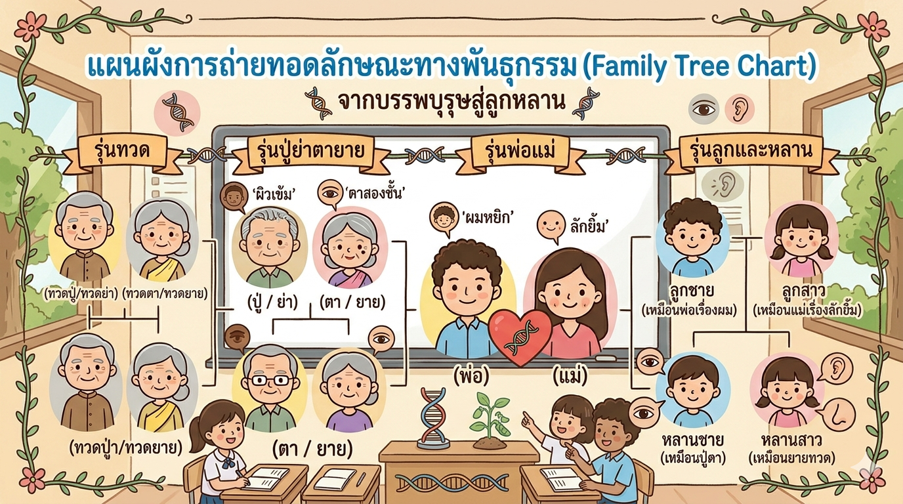
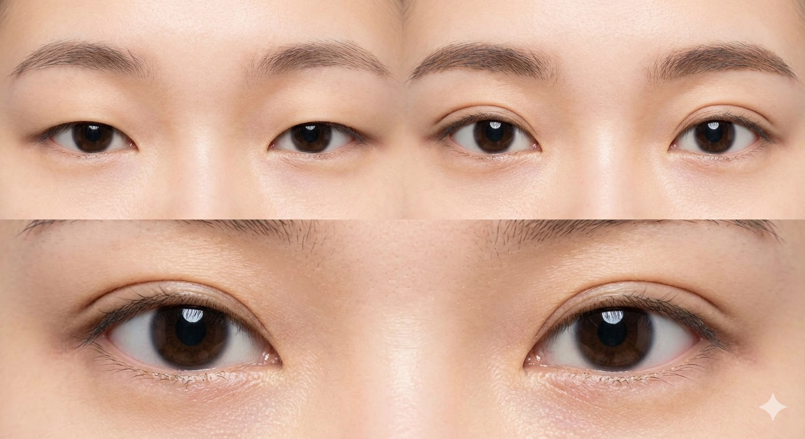
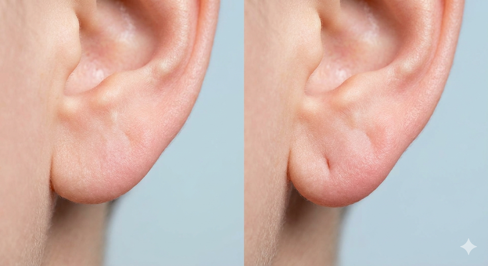
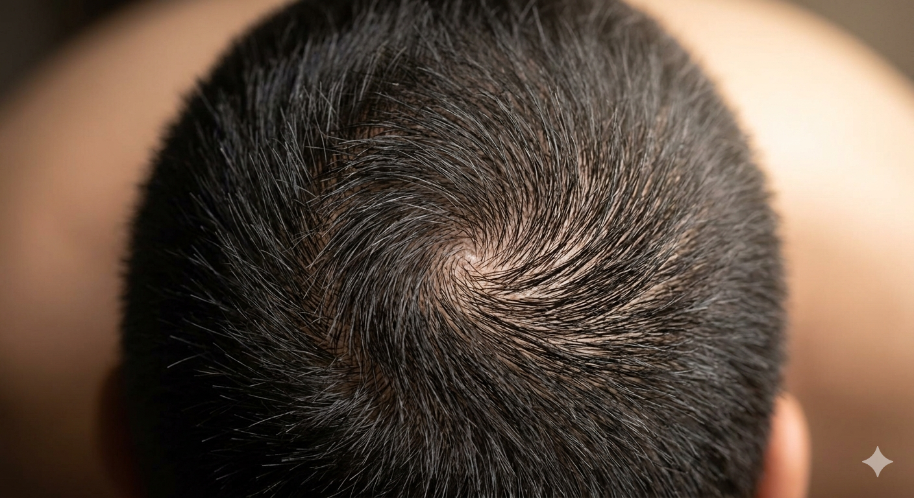
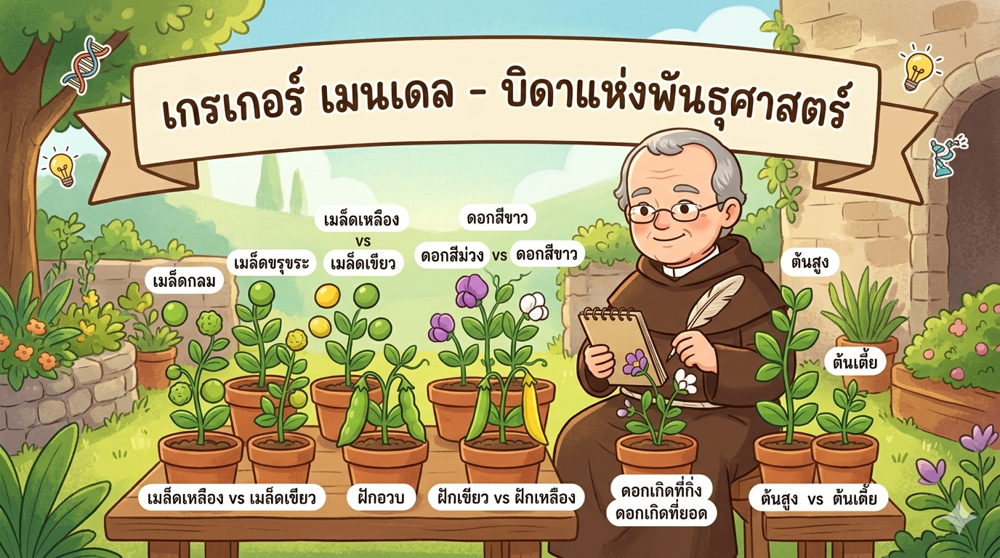

ยีน (Gene) คืออะไร?
ภายในร่างกายของเรามี "หน่วยพันธุกรรม" ที่เรียกว่า ยีน (Gene) ทำหน้าที่เหมือนพิมพ์เขียวหรือคำสั่งที่บอกว่าเราจะมีลักษณะอย่างไร เช่น สีผิว สีผม หรือความสูง
.jpg) ยีน (Gene) เปรียบเสมือนรหัสลับที่ซ่อนอยู่ในตัวเรา
ยีน (Gene) เปรียบเสมือนรหัสลับที่ซ่อนอยู่ในตัวเรา
โดย พระจอมเกล้าติวเตอร์
น้องๆ เคยสังเกตไหมว่า ทำไมเราถึงมีหน้าตาคล้ายคุณพ่อคุณแม่? บางคนมีจมูกเหมือนพ่อ บางคนมียิ้มเหมือนแม่ สิ่งเหล่านี้เรียกว่า การถ่ายทอดลักษณะทางพันธุกรรม ครับ

ภาพแสดงความคล้ายคลึงกันของคนในครอบครัวลักษณะทางพันธุกรรม คือ ลักษณะของสิ่งมีชีวิตที่ถ่ายทอดจากบรรพบุรุษ (ปู่ ย่า ตา ยาย พ่อ แม่) ส่งต่อไปยังลูกหลานนั่นเอง
ภายในร่างกายของเรามี "หน่วยพันธุกรรม" ที่เรียกว่า ยีน (Gene) ทำหน้าที่เหมือนพิมพ์เขียวหรือคำสั่งที่บอกว่าเราจะมีลักษณะอย่างไร เช่น สีผิว สีผม หรือความสูง
ยีน (Gene) เปรียบเสมือนรหัสลับที่ซ่อนอยู่ในตัวเรา
ลองส่องกระจกดูซิว่า เรามีลักษณะเหล่านี้เหมือนใครในบ้านบ้าง?

หนังตาชั้นเดียว หรือ หนังตาสองชั้น

การมีติ่งหู หรือ ไม่มีติ่งหู

ลักษณะขวัญ (เวียนซ้าย หรือ เวียนขวา)
การมีลักยิ้ม หรือ ไม่มีลักยิ้ม
รู้ไหมว่าใครเป็นคนค้นพบเรื่องนี้? เขาคือ เกรเกอร์ เมนเดล บาทหลวงผู้ใจดีที่ลองปลูกถั่วลันเตาเพื่อสังเกตการถ่ายทอดลักษณะต่างๆ จนได้รับฉายาว่า "บิดาแห่งวิชาพันธุศาสตร์" ครับ

เกรเกอร์ เมนเดล กับการทดลองเรื่องถั่วลันเตานักวิทยาศาสตร์ใช้ตัวอักษรภาษาอังกฤษแทน "ยีน" ครับ โดย ตัวพิมพ์ใหญ่ (T) = ยีนเด่น และ ตัวพิมพ์เล็ก (t) = ยีนด้อย
| คู่ของยีน (รหัสลับ) | ประเภท | ลักษณะที่ปรากฏ (ผลลัพธ์) |
|---|---|---|
| TT | พันธุ์แท้ (เด่น) | 🌟 แสดงลักษณะเด่น (เช่น ต้นสูง) |
| Tt | พันธุ์ทาง | 🌟 แสดงลักษณะเด่น (เพราะตัวใหญ่ข่มตัวเล็ก) |
| tt | พันธุ์แท้ (ด้อย) | ☁️ แสดงลักษณะด้อย (เช่น ต้นเตี้ย) |
วิธีสังเกตง่ายๆ คือ "ลักษณะเด่นจะข่มลักษณะด้อยเสมอ"
คือลักษณะที่ปรากฏออกมาให้เห็นบ่อยๆ แม้จะมีพ่อหรือแม่เพียงคนเดียวที่ส่งยีนนี้มาให้ เราก็จะมีลักษณะนั้นทันที!
คือลักษณะที่มักจะ "แอบซ่อน" อยู่ จะยอมปรากฏตัวออกมาก็ต่อเมื่อ ทั้งพ่อและแม่ส่งยีนด้อยมาให้พร้อมกันทั้งคู่เท่านั้น
"ดังนั้น ถ้าเด็กๆ มีลักษณะที่ไม่เหมือนทั้งพ่อและแม่ (เช่น พ่อแม่ผมหยิกแต่ลูกผมตรง)
แสดงว่าลักษณะนั้นคือ ลักษณะด้อย ที่แอบซ่อนอยู่ในตัวพ่อแม่นั่นเองครับ!"
คำชี้แจง: ลาก "คำตอบ" ด้านล่าง ไปวางในช่องว่างให้ถูกต้อง (ทำทีละข้อนะเด็กๆ)
*จำง่ายๆ: ลักษณะด้อยมักจะเป็นลักษณะที่ดู "เรียบง่าย" กว่าครับ